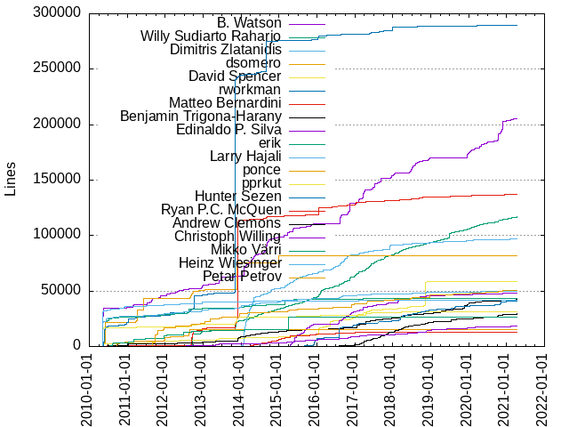

Authors
| Author | Commits (%) | + lines | - lines | First commit | Last commit | Age | Active days | # by commits |
|---|
| B. Watson | 7315 (10.11%) | 205554 | 57532 | 2010-03-04 | 2021-04-07 | 4051 days, 20:50:09 | 808 | 1 |
| Willy Sudiarto Raharjo | 7091 (9.80%) | 116836 | 98578 | 2010-06-18 | 2021-04-11 | 3950 days, 3:50:35 | 1596 | 2 |
| Dimitris Zlatanidis | 4055 (5.60%) | 96697 | 23655 | 2014-01-03 | 2021-04-09 | 2652 days, 23:00:26 | 1086 | 3 |
| dsomero | 3485 (4.82%) | 81961 | 110184 | 2010-04-25 | 2015-01-16 | 1726 days, 10:13:52 | 129 | 4 |
| David Spencer | 2966 (4.10%) | 58298 | 31661 | 2010-05-12 | 2020-05-10 | 3651 days, 7:12:37 | 486 | 5 |
| rworkman | 2948 (4.07%) | 289629 | 200610 | 2010-02-23 | 2021-01-04 | 3967 days, 23:21:08 | 576 | 6 |
| Matteo Bernardini | 2293 (3.17%) | 136890 | 48193 | 2010-05-29 | 2021-04-08 | 3966 days, 23:37:31 | 614 | 7 |
| Benjamin Trigona-Harany | 2169 (3.00%) | 43335 | 17895 | 2010-06-24 | 2021-04-10 | 3943 days, 6:15:13 | 919 | 8 |
| Edinaldo P. Silva | 1710 (2.36%) | 47898 | 12643 | 2015-04-17 | 2021-03-27 | 2171 days, 0:06:56 | 460 | 9 |
| erik | 1269 (1.75%) | 43315 | 16185 | 2010-03-04 | 2020-09-04 | 3837 days, 18:04:30 | 343 | 10 |
| Larry Hajali | 1173 (1.62%) | 49917 | 15508 | 2010-03-04 | 2021-04-10 | 4055 days, 4:35:08 | 556 | 11 |
| ponce | 1083 (1.50%) | 14952 | 6385 | 2010-09-21 | 2012-08-28 | 707 days, 10:26:39 | 83 | 12 |
| pprkut | 1075 (1.49%) | 30981 | 104019 | 2010-05-11 | 2019-03-03 | 3217 days, 8:59:42 | 102 | 13 |
| Hunter Sezen | 964 (1.33%) | 40719 | 10615 | 2015-07-07 | 2021-02-10 | 2044 days, 16:59:50 | 247 | 14 |
| Ryan P.C. McQuen | 909 (1.26%) | 12858 | 6262 | 2014-01-03 | 2017-04-13 | 1195 days, 10:27:02 | 312 | 15 |
| Andrew Clemons | 909 (1.26%) | 29519 | 17140 | 2016-07-26 | 2021-04-10 | 1718 days, 20:26:39 | 431 | 16 |
| Christoph Willing | 732 (1.01%) | 18607 | 9479 | 2011-03-05 | 2021-04-10 | 3688 days, 14:11:02 | 476 | 17 |
| Mikko Värri | 723 (1.00%) | 26491 | 5720 | 2010-07-17 | 2015-03-29 | 1716 days, 20:50:05 | 62 | 18 |
| Heinz Wiesinger | 665 (0.92%) | 41338 | 12182 | 2010-03-04 | 2017-01-31 | 2525 days, 3:35:53 | 110 | 19 |
| Petar Petrov | 642 (0.89%) | 50285 | 10479 | 2011-08-17 | 2021-04-10 | 3523 days, 15:38:12 | 131 | 20 |
These didn't make it to the top: Nishant Limbachia, Robby Workman, Kyle Guinn, Alexander Verbovetsky, Mario Preksavec, Marcel Saegebarth, Niels Horn, Audrius Ka≈æukauskas, David Woodfall, Andre Barboza, LukenShiro, Dugan Chen, orbea, Edward W. Koenig, Donald Cooley, ArTourter, michiel, M.Dinslage, Barry J. Grundy, Chris Novakovic, Zachary Storer, Dave Woodfall, Vincent Batts, Eugen Wissner, Markus Reichelt, Tim Dickson, Markus Rinne, Aleksandar Samardzic, Andrzej Telszewski, Aaditya Bagga, Binh Nguyen, Brenton Earl, Andreas Voegele, David Somero, Yth - Arnaud, Marco Bonetti, LEVAI Daniel, Jostein Berntsen, Ebben Aries, Andreas Guldstrand, Thibaut Notteboom, Johannes Schoepfer, Michales Michaloudes, Eugene M, Panagiotis Nikolaou, Fridrich von Stauffenberg, Zhu Qun-Ying, Isaac Yu, R. S. Ananda Murthy, Lenard Spencer, Fernando Lopez Jr, Jeremy Hansen, T3slider, Frank Caraballo, Arn0, khronosschoty, Eugene Wissner, Jan F. Chadima, Roberto Neri, Pierre Cazenave, Glenn Becker, JK Wood, David O'Shaughnessy, Chris Abela, Martin Lefebvre, Grigorios Bouzakis, Antonio Hern√°ndez Blas, crocket, Thomas Morper, Rob van Nues, Menno Duursma, Christopher Walker, Kent Fritz, DhabyX, David Melik, Cristiano Urban, Chess Griffin, Michael Wagner, Cezary M. Kruk, Dominik Drobek, Philip Lacroix, Zbigniew Baniewski, Phillip Warner, Chris Walker, slakmagik, Leo C, Andrew Payne, Andrew Strong, Luis Henrique, Daniil Bratashov, pyllyukko, Nikos Giotis, Heiko Rosemann, Philip van der Hoeven, Edward Koenig, Sebastien BALLET, Leonard Schmidt, Erik Falor, powtrix, Reza Talebi, titopoquito, Michal Bialozor, mario, Ozan T√ºrkyƒ±lmaz, Menno E. Duursma, Gerardo Zamudio, klaatu, Stu Miller, Nikolay Korotkiy, Fellype do Nascimento, Paul Wisehart, Iskar Enev, Alan Aversa, Serban Udrea, Skaendo, Gethyn ThomasQuail, Giuseppe Di Terlizzi, Pablo Santamaria, David Sullins, Alan Alberghini, Marek Wodzinski, Klaatu, Richard Narron, Murat D. Kadirov, Daniel LEVAI, Grissiom, Emmanuel N. Millan, Giorgio Peron, Christophe Trussardi, Andrew Brouwers, R.S.Ananda Murthy, Mikko Varri, melikamp, hollywoodb, Niklas Nille √Ökerstr√∂m, nomnombtc, larryhaja, Roberto Metere, Azure Zanculmarktum, vvoody, Lionel Young, Giovanne Castro, Didier Spaier, Jorge Giner, Daniel de Kok, Miguel De Anda, Erwin van Zanten, Ruben Schuller, dslackw, Kevin Matthew, markus reichelt, Duncan Roe, Andrey Maraev, Yalla-One, Ricardo J. Barberis, Marcin Szychowski, Richard Ellis, Mauro Giachero, S√©bastien Ballet, Daniel Stolarski, Markus Hutmacher, Dmitrii Sosedov, Bill Kirkpatrick, core, Wayne Cuddy, Matthew Fillpot, Daniel Prosser, Amit Ugol, Wainamoinen, V'yacheslav Stetskevych, Strahil Yordanov, Peter Wang, Nate Bargmann, Igor Alexandrov, Diogo Leal, Adis Nezirovic, Muhammad Mahendra Subrata, John Vogel, Gilcio Amaral, Corrado Franco, Chris Farrell, Anj Duvnjak, Ruari Oedegaard, Pedro Mendes, Jason Graham, pomfland, Thomas Szteliga, Dario Nicodemi, Andy Bailey, alkos333, Sebastian Arcus, Carlos Corbacho, rfmae, Michael Johnson, Felix Pfeifer, Euan Thoms, Ekin Akoglu, skaendo, Marek Srejma, Erich Ritz, Bojan Popovic, stormtracknole, Timothy Pollard, Rodrigo Gimenez, Marco Cecchetti, Arkadiusz Drabczyk, Andrew Tkalia, Alan Hicks, abooksigun, Oleg O. Chukaev, Kevin Paulus, James Geboski, Ferenc Deak, Dhaby Xiloj, Andy Goth, Vasilis Papavasileiou, Jick Nan, otzy_007, Steven Pledger, Sean Donner, Prof. HORSTMANN, Niki Kovacs, MagicMan, B Watson, Vliegendehuiskat, Tracy Williams, Thorn Inurcide, Ryan S. Northrup, Pedro R.M. J√∫nior, Michael Edie, Marcin Herda, Eugene Suter, wigums, Zordrak, Michel A. BEGUE, Manuel Arg√ºelles, Andrew Lobanov, Yanes Checcacci Balod, Talos Thoren, Steven King, Sergey Poznyakoff, Sergei Fedosoff, Sebasti√°n Salazar Molina, Joielechong, Jefferson Rocha, J. Scheurich, GPLeo, Arthur W. Green, Andy Alt, Andrew Psaltis, Alexander Bruy, zux, fuzzix, Ronny Schmatzler, Rodney Cobb, Mohammad Etemaddar, Michel Begue, Josiah Boothby, Andre Fernando, Alex Lysenka, Petr Kletecka, Muhammad Herdiansyah, Gustavo Conrad, Guillermo Bonvehi, CRTS, grissiom, Ricardson Williams, Reedych, Nikolay Nikolov, Jens Weber, CCHsu, Antonio Leal, Andrew Rowland, orphaned - no maintainer, Ole-Andr√© Rodlie, Nick Smallbone, Jockey S. Kyd, Charles E. Kauffman, Asaf Ohaion, wru, fdeak, Vladimir MyRequiem, Shrivatsan Sampathkumar, Robert Allen, NK, Michiel van Wessem, Michael Heras, Harald Achitz, Elvio Basello (HelLViS69), –°–∏–º–æ–Ω –ë–æ–ª–æ–∫–∞–Ω–æ–≤, –°. –°. –ë–æ–ª–æ–∫–∞–Ω–æ–≤—ä, ≈†ime Ramov, nobody, awg, Sukma Wardana, Marek Buras, Jo√£o Felipe Santos, Joel J. Adamson, Brian Muramatsu, Ben Mendis, eroc, byteframe, adev, Tom Canich, Stylianos Tsampas, Oleg A. Deordiev, K.D.Hedger, Brian Reichert, Bogdan Radulescu, Alex Word, Alan_Hicks, mdrights, aaditya, Stansoft, Pierre-Philipp Braun, Morten Juhl-Johansen Z√∂lde-Fej√©r, Mikhail Zotov, Melvin Mawhin, Luka Novsak, Lehman Black, Julian Grinblat, Jonathan Larsen, Jeff Parent, Felipe Bugno, David Miller, Cherife Li, Alan Ianson, firebird, blizzack, Sergio Vicari, Pr. HORSTMANN, Phil Warner, PaulKinsler, Nitish Ragoomundun, M√°rio Antunes, Martin Rogge, Logan Rathbone, Kristaps Esterlins, Heiko Schlichting, Eric B. Pratt, Didier Charles, David Golus, Christophe Nguyen, Black Rider, Vitor Borrego, Tomasz Bywalec, Pouria Rezaei, Matthew Miller, Mark Walling, Javier Rojas, Howard Pepper, Francisco Ambrozio, Dejan Strbac, Bryan Harris, –°–∏–º–æ–Ω—ä –°. –ë–æ–ª–æ–∫–∞–Ω–æ–≤—ä, luoyi, Valeriy Timchenko, Tim Dickson (timsoft), Peter Drauden, Nai, Lu√≠s Henrique, Joey Trungale, Gwenhael Le Moine, Guilherme Calandrini, Gabriel Diniz Gisoldo, Evandro Alves Rodrigues, Dave Margell, Dan-Simon Myrland, Christopher Forrest, Charles Daniels, Bruno Queiros, Branko Grubic, Andrea Maccis, kchan, Tonus, Scott Parker, Sasongko Bawono, Ruan K. F, Michael Filz, Martin Ivanov, Mario Antunes, Leo Midha, Keith Richie, Jasper Klein, Eric Fernandes Ferreira, Emmanuel N. Mill√°n, Edinaldo P.Silva, Du≈°an Stefanoviƒá, Cheng Bao, Brian Kysela, Arun Mascarenhas, simotrone, shelldweller, chinarulezzz, Zach Lewis, Ulrich Schaefer, Sebastien Ballet, Sasha Abbott, Nick Warne, Michael Bueker, MDrights, King Beowulf, Kenneth Chan, Ken Roberts, Judah Milgram, Juan Valencia Escalante, Jonathan Li, John Tyree, John Berger, Jim Capozzoli, Guan-Zhong Huang, Derek Noonburg, Dave MacCormack, Brad Hermanson, AW Green, majk, davidwoodfall, chopp, antonioleal, Xavier Maillard, Vladimir Yatsemirski, Tom Fitzhenry, Thorsten, Thales A. Tsailas, Stefan Bidigaray, Shrivatsan V Sampathkumar, S. Randall Sawyer, R S Ananda Murthy, Ponce, Owen Swerkstrom, Mike Heras, Mihai Militaru, Meckafett, Max Miorim, Marco Pessotto, Manuel Reimer, M Slodkiewicz, Lyle Sigurdson, Konrad J Hambrick, Justin Teague, Jose Lopes, Giuseppe Scalzi, Gabriel Magno, Edinaldo, David Matthew Jerry Koenig, David Fillpot, Bernski Comadizo, Bending Unit 647, Arun Prasannan, Adnan Hodzic, rob van nues, redtricycle, mancha, korgman, ilmich, Zak B. Elep, Yucatan Costa, Youjie Zhou, William PC, Trayan Denev, Steve Pledger, Rudson Alves, Rub√©n Llorente, Pragmatic Cypher, Petr Hejl, Olivier Esser, Niklas 'Nille' √Ökerstr√∂m, Nicolas Piatto, Nicky Chorley, Mathew Holleran, Mark Grocock, Marian Marinov, Marco Maggi, Manuel Mantilla, Luke Williams, Lorenzo Trevisan, Leigh Wedding, Kevin Scranton, Kees Theunissen, Jakob Nylin, Jacob Pipkin, Fr√©d√©ric Galusik, Fernando Giannasi, Eric Schultz, Eric Hameleers, Daniel, Christopher Reimer, Capi X, B. Jogai, Axel Bergerhoff, toolonely, tjohann, mid-kid, eviljames, Zoran Stojakovic, Tomasz Konojacki, Thiago Coutinho, Steven Vch, Stephen Van Berg, Soydaner Ulker, Ryan Q, Ruoh-Shoei LIN, Robert Goodall, Nilton Moura, Mohamed LYAHYAOUI, Martin Lefevbre, Mark Saiia, Kurt Erickson, Kuroi Kenshi, Kuro_CODE25, J√°n Suƒçan, Jo≈æe Zobec, Joe Rozner, Jim Diamond, Jheengut Pritvi, Jean-Yves Didier, Jan Herrygers, Henry Jensen, Hannes Worst, Gustavo Conrad - LU8WFY, Geoff Ritter, Geno Bob, Gary Herreman, GOSIKI Agiri, Elvio Basello, Dylan Armitage, Dustin Schnee, Diniz Bortolotto, Diego Pantano, Daniel Romero, Daniel R, Daniel Liljeqvist, Daniel Cash, Christopher L Duston, Charles, CapEnt, Ben Collver, B.Ton, Ash Wiren, Asaf Ohayon, Andrew Conway, Alexander S√∂derlund, Adis Neziroviƒá, –°. –°. –ë–æ–ª–æ–∫–∞–Ω–∞—Ä—ä, willysr, slacksam, slackmuz, sercari, nullboy, linrs, fossfun, dmn, digwtx, davjohn, ariarat, Wade Nelson, Tim Danforth, Spycrowsoft, Sergey Fedosoff, Sean MacLennan, Roman Kodinets, Robert Delahunt, Richard Scott Smith, Rex Hauser, Piotr Janaszek, Pedro Guimaraes, P.D. Parnoff, Ozan Turkyilmaz, Nobody, Nishant Limbahcia, Nicolas Kovacs, Navigium, Minime, Michael Kapelko, Michael Gabilondo, Mauricio Martinez, Matthew Budd, Marcus Moeller, Marc-Andre Moreau, Manfred Mueller, Lu√≠s Fernando Carvalho Cavalheiro, Lazar Isailovic, Khronosschoty, Justin H Haynes, Jo√£o Medeiros, Jonathan Yu, John B, Joachim Kruth, Jeanne-Kamikaze, Jay, Jan-willem De Bleser, Jack Maddox, Jack Hunt, JEREMY HOCDE, Ian D. Brunton, Henkjan Gersen, Gustavo Brondani Schenkel, Guilherme Portalegre, Greg Tourte, Georgi Kolev, Fernando B Giannasi, Duane Dohrman II, Dionysis Ntreou, Danny Schmarsel, Cj Case, Christian Schneider, Chernov V. V, CJ Johnson, Bruno T. Russo (BrunoRusso), Bruce Forte, Bogdan Pangrati, Bifferos, Armin Besirovic, Antonio Taverna, Andr√© Geraldo Vieira, Andres Fuentes, Allen Coleman, Ali Ahmadi, Alexandre Albuquerque Arnt, Alex Diaconu, /dev/rob0, x-ip, sero, seb, paul wisehart, mara, koolniczka, klorophatu, jamesaxl, gshep, gnubien, errordeveloper, bughunter2, andy brookes, adaptr, Young Chol Song, Yann M√©rignac, Winkel Manah, William Bowman, Vegard Haugland, Tushar Jagad, Tim Fitzhenry, Thomas Bourdon, Terry Laundos, Tarantino Antonino, Steve Kennedy, Steffen Schwebel, Serg Bormant, Ron F. DeMoss, Randall Sawyer, Piter PUNK, Peter Dambier, Nk, Nikos Yotis, Nikolas Nyby, Mikhail Cuddy, Michael Pratt, Michael Gehring, Matt Kelly, Matt Hayes, Mats B. Tegner, Martin Rodriguez, Martin A. Ivanov, Marin Glibic, Marek Srejma (slacksam), Marek Kuban, Marco Marini, Marcel Steinbeck, MLanden, Luciano Tropea, Luca Petraglio, Kurt M. Weber, Kevin Myers, KaMii, Juan Pablo Cordova E, Juan Camilo Nore√±a, Jorge Gajon, Jorge Barros de Abreu, Jeremy HOCDE, James Rich, James Powell, Ilya Ponetayev, Igor, Icaro Perseo, Greg' Ar Tourter, Germ√°n M√°rquez Mej√≠a, Georg Nagel, GUAN Xin, G. Schoenmakers, Furry Monster, Florian Kanngiesser, Elvis Angelaccio, David Negroni, Bradley D. Thornton, Bogdan Tatarov, Bob De Mars, Ben, Beej Jorgensen, Arnaud Dupuis, Arik Miller, Andrew Lindberg, Andrew Antle, Andrea Villa, Althaf K Backer, Alex-P. Natsios, Alan Dingeldein, Alam Guntur Nugroho, Adam Lukomski, AbortRetryFail, Aaron W. Hsu, A. Green, –°–∏–º–æ–Ω—ä‚Äì–°–µ–≤–∞—Ä—ä –°. –ë–æ–ª–æ–∫–∞–Ω–æ–≤—ä, xroberx, unmaintained, ulivo1991, syncbq, spaceman, rexim, ppr:kut, notKlaatu, mightaswell, meckafett, mccnews, maldoror, m. budiman, lorenzotrevisan, ktabic, klatuu, jpipkin, javivf, jarbowski, hackedhead, grey, goarilla, drhouse, dhabyx, cteg, csokol, bkysela, William G Gardella, Trevor D. Cook, Tomas Matejicek, Thyr, Thomas_York, Thomas O. Robinson, Stu Reedy, Stephan Lucas, Stefano Guidoni, Stefan Beckert, Slax-Dude, Simone Giustetti, Shining, Sean Hinchee, Sanel Zukan, Samuel Judson, Rudson R. Alves, Roman Revyakin, Robert Zelic, Robert E. Lee, Renato Martini, Ralph Moritz, Pomfland, Peter Sarkoci, Per Dal√©n, Paul Liconti, Patrick Pippen, Pablo Oses, Pablo Hernan Saro, Omer YILMAZ, Ole Andre Rodlie, Oda, Nikos Skalkotos, Nicolas Steinmetz, Nicolas Dato, NetrixTardis, Nelson Milum, Navigare, Mykyta Solomko, MrJackson, Mr. B-o-B, Moritz Wilhelmy, Miroslaw Turski, Michiel, Michalis Pappas, Michael Ren, Maykon Chagas, Mauricio Paicil, Matthew Kuzminski, Mats Bertil Tegner, Marshall Scott, Mark Noman, Mario St-Gelais, Marcel de Reus, Marc Dix, Manuel Fill, Manlio Modugno, Luiz Carlos Ramos, Lorenzo Stramaccia, Lockywolf, Korgman, Kai Schreyer, Jun SAITO, Juan M. Lasca, Joseph Schofield, Jose Maria Marin Carceles, Jorey Bump, Jordan Evans, Jonathan Chapman, Jon Ware, JokerBoy, John Louis Del Rosario, John Clizbe, Joel Adamson, Jim Bottino, Jeffrey T. Read, Jean-Luc Biord, Janis Eisaks, Jan Filip Chadima, James Axl, Ismael Cort√©s, Ilya Etingof, Hubert Hesse, Hexxend, Henry Pfeil, Henrique Grolli Bassotto, Hazel Russman, Hans Goossen, Graham Orange, Gerardo Zamduio, Georgy Shepelev, Georgios Efstathiou, George Vlahavas, GenoBob, Gene Baxter, Fred Richards, Franzen, Frank Gingras, Francisco Dalla Rosa Soares, Floreal C, Filippo Tessarotto, Fabio Sangiovanni, Evan Hisey, Egor Zayats, Eduardo Sanchez, Eduardo Oda, E. axillaris, Dockland Porter, Davidson Francis, Daniel Jordan, Damien Durand, Conrado Ruch Jr, Ciorceri Petru Sorin, ChuangTzu, Chris Lawrence, Chernov, Bruno Vezzaro, Brice Lopez, Blase Stanek, Benno, Ben-Richard Ebbesvik, Arvydas Sidorenko, Ar Tourter, Anton Sil'uev, Antoine NONYME, Andrey Butirsky, Andrew Waters, Andreo F. Rissardo, Alfredo Tomasini, Alexander Brovikov, AlexGAV, Alex Elliott, Adrian Ulrich, /dev/ammo42, –° —É–≤–∞–∂–µ–Ω–∏–µ–º, –ê.–ö–∞—Ä–∞–±–∞–Ω–æ–≤, –ö–∞—Ä–∞–±–∞–æ–≤ –ê–ª–µ–∫—Å–µ–π, –ö–∞—Ä–∞–±–∞–Ω–æ–≤ –ê–ª–µ–∫—Å–µ–π, –ê—Ä—Ç—É—Ä –ö—É—Ä–∫–æ–≤, yustin, xaizek, svatsan, spookydonut, soyalexman, sombriks, rudsonalves, rodolfo gouveia, rc-05, r3n4n, pp, p5ych0 r0075, nullmaster, notklaatu, nmoura/bombtrack, nmoura, netrixtardis, mwgg, morte.noir, morte, miguel de anda, mannyslack, majekw, l.nardou, junkyardsparkle, juankman94, gregory guy, fondfire, flanker, endspiel, e20100633, dunkyp, diogo@diogoleal.com, crtxc, cRaig Forrester, bocke, bassmadrigal, asaf, arfon, ancker.du, albator, Zolt√°n P√≥sfai, Zhischenko Sergey, Zach Gardner, Yury Buldakov, YuLin Wu, Ythogtha, Xylemon, Xgates, William G. Gardella, Will Brokenbourgh, WhiteWind, Weldon Goree, Weber Kay, W.D. Montgomery, Vladimir Zdorovenco, Veljko Tanjga, Vasco Santos, Troic Bah, Trevor Cook, Tomas Halgas, Tobias Schmid, Tobias Columbus, Timothy M Pollard, Tim Dickson (Timsoft), Tim, Tiago Machado, Thomas Robinson, Thiago Nascimento, Taxis, Tak Ooishi, Swaz, Steven A. McIntosh (samac), Steffen Wendzel, Simon Coxall, Shawn Pringle B.Sc, Seth Kenlon, Seth House, Sergey Portnov, Scot Doyle, Sahil Raina, Ryan Losh, Ruan, Rohan Ferris, Robert Alessi, Rob Ellis, Richlv, Richard Cranium, Rex Abert, Renan C. A. Alves, Relative, Reinier de Blois, Ray Gomez, Raveriux, Rafael Tavares, R. Jesus, Qun-Ying, Psychi, Pierre Cazemave, Philippe Delavalade, Petar Milojevic, Perseo, Pawel Standowicz, Patrick Volkerding, Patrick Verner, Pablo J. Santamaria, Orbea, OpenPandora, Oleg Deordiev, Niv Ierushalmi, Nikolai Saika, Niklas 'Nille' ≈kerstrˆm, Nexus, Nazarov Michael, Naglfar, NO MAINTAINER, M·rio Antunes, Morten Juhl-Johansen Z√∂lde-Fej√©, Michel A. Begue, Micha≈Ç B, Micha√´l Dupont, Michael Stewart, Michael Langfinger, Michael Connolly, Michael Boelen, Maximiliano Sorribas, Matthias Diehn Ingesman, Matthew Graybosch, Matt Schurenko, Matt Dinslage, Matt Arnold, Mason Loring Bliss, Martinus Ady H, Martin McConnell, Mark Halstead, Mark Carter, Mario, Marco Ferraioli, Marcin Slodkiewicz, Macius Kuzmin, M.A. BEGUE, Luiz Ramos, Luis Henrique F. Cardoso de Mello, Luis Cavalheiro, Luc Van Rompaey, Ljubomir Kurij, Leonardo de Amaral Vidal, Leonardo, Ledu, Larry Halali, LITKK, Kusmin, Kot Czarny, Konstantin Oshovskij, Kevin Pulo, Ken Rimlinger, Ken Bender, K. Eugene Carlson, Jules Villard, Jose Riha, Jorge Courbis Araya, Joni Martikainen, Jon Hulka, John Sweeney, Johann Wilhelm, Jisa, Jim Brewster, Jeffrey Dick, Jason Woodward, Jason A. Donenfeld, James axl, Jake Burns, J Pipkin, Ivan Rozhkov, Iskren Hadzhinedev, Isaque Galdino, Igor Krasylivskyi, Igor Drozdovsky, Ian, Huon, Hoang Xuan Phu, Herpiko Dwi Aguno, Haroldo F. Jardim, Hans Strijards, Gregory Schoenmakers, Grant Coady, Glen Becker, Giancarlo Scola, Gerardo GÛmez, Gerardo G√≥mez, Georgi Hristozov, Genghis Khan, G Edward Whiteside, Fred Emmott, Frans Houweling, Frank Perez, Frank Endres, Fernando Lopez, Fellype, Felix Krueger, Felipe Gonz√°lez, Federico Lupi, Fauzi Gomez, Farhad Shahbazi, Falu, Fah G. Ka, Evgeny Ratnikov, Eug√©ne Suter, Eugene P, Eugene Kommunist Bolotov, Eric Underhill, Eric Mulvaney, Emmanuel Millan, Emil Torofiev, Eduardo Alvarez, Eduard Rozenberg, Edgar Pettijohn, Ed Ender, Duane Penzien, Dr. Mike Murphy, Doogster, Don Allen, Dimitris Tsagkatakis, Dimitris Papastamos, Dimiris Zlatanidis, Diego Borghetti, David Slusky, David Demelier, David Delansay, David Breese, Dariusz Brzezinski, Daniel F, Daniel Bowling, Dan LaRocque, Cyril A. Sluchanko, Coredumb, Claudio Henrique Fortes Felix, Citizen X, Christian Wansart, Christian Anders, Chris, Charles Polisher, Cameron Need, CARLIER Gaetan, Brian O'Hanlon, Brett Taylor, Branden, Bradley Thornton, Boris V, Boricua, Benjamin Trigon-Harany, Bas Couwenberg, Bartosz Bialy, Bart van der Hall, Axel Scheepers, At.Dichev, Ashley Wiren (spook), Arne Welzel, Arnaud, Arief JR, Anton Worshevsky, Anton S. Abanin, Anton Chernyshov, Andy, Andr√© Barboza, Andrwe Tkalia, Andrey M. Lipaev, Andrew Stevens, Andrei G, Andreas V√∂gele, Andreas Liebe, Andrea De Pasquale, Ananda Murthy R S, Amiralul, Alik, Alexei Panov, Alexander Schultz, Alexander Feldman, Alessandro Vaccaro, Alessandro Pittaluga, Alergie, Alan, Akio Nishimura, Adam Swift
Only top 20 authors shown

Only top 20 authors shown
| Month | Author | Commits (%) | Next top 5 | Number of authors |
|---|
| 2021-04 | Benjamin Trigona-Harany | 59 (24.58% of 240) | Jostein Berntsen, Willy Sudiarto Raharjo, Pouria Rezaei, Andrew Clemons, Giuseppe Di Terlizzi | 54 |
| 2021-03 | Willy Sudiarto Raharjo | 32 (13.06% of 245) | B. Watson, Andrew Clemons, Arn0, Markus Rinne, Emmanuel N. Millan | 65 |
| 2021-02 | Willy Sudiarto Raharjo | 41 (13.31% of 308) | B. Watson, Andrew Clemons, Christoph Willing, Benjamin Trigona-Harany, Isaac Yu | 75 |
| 2021-01 | Willy Sudiarto Raharjo | 61 (15.33% of 398) | Kyle Guinn, Benjamin Trigona-Harany, Lenard Spencer, Dimitris Zlatanidis, Andrew Clemons | 80 |
| 2020-12 | Willy Sudiarto Raharjo | 35 (13.62% of 257) | Andrew Clemons, B. Watson, Matteo Bernardini, Alexander Verbovetsky, Dimitris Zlatanidis | 68 |
| 2020-11 | B. Watson | 101 (28.45% of 355) | Willy Sudiarto Raharjo, Benjamin Trigona-Harany, Andrew Clemons, orbea, Alexander Verbovetsky | 69 |
| 2020-10 | B. Watson | 934 (72.18% of 1294) | Benjamin Trigona-Harany, Willy Sudiarto Raharjo, orbea, Andrew Clemons, Edinaldo P. Silva | 69 |
| 2020-09 | Willy Sudiarto Raharjo | 37 (8.60% of 430) | B. Watson, Petar Petrov, Alexander Verbovetsky, Tim Dickson, Arn0 | 83 |
| 2020-08 | Matteo Bernardini | 33 (32.04% of 103) | Willy Sudiarto Raharjo, Andrew Clemons, B. Watson, Benjamin Trigona-Harany, Christoph Willing | 14 |
| 2020-07 | B. Watson | 100 (61.35% of 163) | Willy Sudiarto Raharjo, Benjamin Trigona-Harany, Andrew Clemons, Dave Woodfall, Dimitris Zlatanidis | 18 |
| 2020-06 | orbea | 54 (13.33% of 405) | Willy Sudiarto Raharjo, Tim Dickson, Donald Cooley, Dave Woodfall, Benjamin Trigona-Harany | 86 |
| 2020-05 | Willy Sudiarto Raharjo | 51 (11.16% of 457) | Benjamin Trigona-Harany, Larry Hajali, Lenard Spencer, Isaac Yu, B. Watson | 111 |
| 2020-04 | B. Watson | 53 (11.88% of 446) | Willy Sudiarto Raharjo, Dave Woodfall, Benjamin Trigona-Harany, Andrew Clemons, Lenard Spencer | 87 |
| 2020-03 | Willy Sudiarto Raharjo | 46 (13.65% of 337) | B. Watson, Benjamin Trigona-Harany, Dave Woodfall, Andrew Clemons, Edinaldo P. Silva | 83 |
| 2020-02 | Willy Sudiarto Raharjo | 130 (24.03% of 541) | B. Watson, Benjamin Trigona-Harany, Dave Woodfall, Dimitris Zlatanidis, Edward W. Koenig | 93 |
| 2020-01 | B. Watson | 479 (38.38% of 1248) | rworkman, Willy Sudiarto Raharjo, Dave Woodfall, Benjamin Trigona-Harany, Johannes Schoepfer | 115 |
| 2019-12 | B. Watson | 97 (19.84% of 489) | Willy Sudiarto Raharjo, Dimitris Zlatanidis, Benjamin Trigona-Harany, orbea, Edinaldo P. Silva | 92 |
| 2019-11 | Benjamin Trigona-Harany | 88 (22.34% of 394) | Willy Sudiarto Raharjo, B. Watson, Alexander Verbovetsky, Christoph Willing, Dimitris Zlatanidis | 78 |
| 2019-10 | Willy Sudiarto Raharjo | 39 (11.82% of 330) | Dimitris Zlatanidis, Edinaldo P. Silva, Yth - Arnaud, Vincent Batts, Alexander Verbovetsky | 79 |
| 2019-09 | Willy Sudiarto Raharjo | 40 (11.73% of 341) | Jan F. Chadima, Dimitris Zlatanidis, Benjamin Trigona-Harany, Hunter Sezen, Larry Hajali | 72 |
| 2019-08 | Matteo Bernardini | 38 (9.84% of 386) | Willy Sudiarto Raharjo, Hunter Sezen, Petar Petrov, Benjamin Trigona-Harany, Andrew Clemons | 88 |
| 2019-07 | Willy Sudiarto Raharjo | 44 (15.38% of 286) | Benjamin Trigona-Harany, Andrew Clemons, Edinaldo P. Silva, Alexander Verbovetsky, Matteo Bernardini | 73 |
| 2019-06 | Willy Sudiarto Raharjo | 45 (15.62% of 288) | Benjamin Trigona-Harany, Edinaldo P. Silva, Christoph Willing, Andrew Clemons, Donald Cooley | 66 |
| 2019-05 | orbea | 130 (26.32% of 494) | Willy Sudiarto Raharjo, Benjamin Trigona-Harany, Dimitris Zlatanidis, Edinaldo P. Silva, Andrew Clemons | 71 |
| 2019-04 | Benjamin Trigona-Harany | 42 (13.68% of 307) | Willy Sudiarto Raharjo, Hunter Sezen, Dave Woodfall, Edinaldo P. Silva, Andrew Clemons | 70 |
| 2019-03 | Willy Sudiarto Raharjo | 56 (13.21% of 424) | Andrew Clemons, Edinaldo P. Silva, Barry J. Grundy, Benjamin Trigona-Harany, Christoph Willing | 84 |
| 2019-02 | Willy Sudiarto Raharjo | 39 (11.08% of 352) | Dimitris Zlatanidis, Edinaldo P. Silva, Benjamin Trigona-Harany, Hunter Sezen, Christoph Willing | 77 |
| 2019-01 | Barry J. Grundy | 39 (9.90% of 394) | Willy Sudiarto Raharjo, Benjamin Trigona-Harany, Kyle Guinn, Andrew Clemons, Edinaldo P. Silva | 78 |
| 2018-12 | Willy Sudiarto Raharjo | 54 (12.03% of 449) | Petar Petrov, Dimitris Zlatanidis, Benjamin Trigona-Harany, B. Watson, Andrew Clemons | 90 |
| 2018-11 | David Spencer | 92 (15.06% of 611) | Hunter Sezen, Larry Hajali, Edinaldo P. Silva, Benjamin Trigona-Harany, Willy Sudiarto Raharjo | 85 |
| 2018-10 | David Spencer | 386 (51.88% of 744) | Willy Sudiarto Raharjo, Benjamin Trigona-Harany, Edinaldo P. Silva, Matteo Bernardini, Andrew Clemons | 83 |
| 2018-09 | David Spencer | 64 (12.80% of 500) | Willy Sudiarto Raharjo, B. Watson, Benjamin Trigona-Harany, Andrew Clemons, Edinaldo P. Silva | 87 |
| 2018-08 | Hunter Sezen | 77 (16.38% of 470) | Willy Sudiarto Raharjo, B. Watson, Dimitris Zlatanidis, David Spencer, Benjamin Trigona-Harany | 81 |
| 2018-07 | David Spencer | 58 (11.76% of 493) | B. Watson, Edinaldo P. Silva, Willy Sudiarto Raharjo, Benjamin Trigona-Harany, Dimitris Zlatanidis | 87 |
| 2018-06 | Matteo Bernardini | 109 (18.08% of 603) | B. Watson, Willy Sudiarto Raharjo, David Spencer, Petar Petrov, Edinaldo P. Silva | 81 |
| 2018-05 | Chris Novakovic | 273 (34.47% of 792) | David Spencer, Edinaldo P. Silva, Willy Sudiarto Raharjo, Dimitris Zlatanidis, Benjamin Trigona-Harany | 94 |
| 2018-04 | David Spencer | 55 (10.74% of 512) | Dimitris Zlatanidis, Edinaldo P. Silva, Willy Sudiarto Raharjo, Benjamin Trigona-Harany, Hunter Sezen | 90 |
| 2018-03 | Matteo Bernardini | 264 (21.48% of 1229) | Willy Sudiarto Raharjo, Hunter Sezen, David Spencer, Benjamin Trigona-Harany, David Woodfall | 95 |
| 2018-02 | Willy Sudiarto Raharjo | 113 (21.94% of 515) | Edinaldo P. Silva, Benjamin Trigona-Harany, Nikos Giotis, David Spencer, Hunter Sezen | 90 |
| 2018-01 | Willy Sudiarto Raharjo | 79 (14.82% of 533) | B. Watson, Benjamin Trigona-Harany, Andrew Clemons, David Spencer, Petar Petrov | 88 |
| 2017-12 | Willy Sudiarto Raharjo | 89 (17.55% of 507) | Hunter Sezen, B. Watson, Benjamin Trigona-Harany, Edinaldo P. Silva, Dimitris Zlatanidis | 75 |
| 2017-11 | Willy Sudiarto Raharjo | 63 (13.91% of 453) | Dimitris Zlatanidis, Edinaldo P. Silva, Benjamin Trigona-Harany, David Spencer, Audrius Kažukauskas | 71 |
| 2017-10 | Willy Sudiarto Raharjo | 105 (21.83% of 481) | David Spencer, Edinaldo P. Silva, Benjamin Trigona-Harany, Petar Petrov, Andrew Clemons | 70 |
| 2017-09 | Willy Sudiarto Raharjo | 73 (13.90% of 525) | David Spencer, Andrew Clemons, Edinaldo P. Silva, Benjamin Trigona-Harany, Dimitris Zlatanidis | 88 |
| 2017-08 | Willy Sudiarto Raharjo | 117 (21.99% of 532) | David Spencer, Dimitris Zlatanidis, Hunter Sezen, B. Watson, Benjamin Trigona-Harany | 80 |
| 2017-07 | Willy Sudiarto Raharjo | 174 (21.48% of 810) | Sebastien BALLET, Dimitris Zlatanidis, B. Watson, Edinaldo P. Silva, David Spencer | 89 |
| 2017-06 | Willy Sudiarto Raharjo | 114 (19.03% of 599) | B. Watson, Edinaldo P. Silva, Matteo Bernardini, Dimitris Zlatanidis, Benjamin Trigona-Harany | 87 |
| 2017-05 | rworkman | 309 (26.37% of 1172) | Willy Sudiarto Raharjo, David Spencer, Dimitris Zlatanidis, Christoph Willing, Edinaldo P. Silva | 86 |
| 2017-04 | Willy Sudiarto Raharjo | 245 (26.63% of 920) | Dimitris Zlatanidis, Edinaldo P. Silva, Benjamin Trigona-Harany, Ryan P.C. McQuen, Christoph Willing | 101 |
| 2017-03 | B. Watson | 1010 (62.81% of 1608) | Willy Sudiarto Raharjo, Edinaldo P. Silva, Dimitris Zlatanidis, Larry Hajali, David Spencer | 93 |
| 2017-02 | Willy Sudiarto Raharjo | 68 (12.19% of 558) | Hunter Sezen, Dimitris Zlatanidis, Edinaldo P. Silva, B. Watson, David Spencer | 72 |
| 2017-01 | Willy Sudiarto Raharjo | 780 (46.85% of 1665) | Ryan P.C. McQuen, David Spencer, Benjamin Trigona-Harany, Edinaldo P. Silva, B. Watson | 97 |
| 2016-12 | Matteo Bernardini | 62 (11.59% of 535) | Willy Sudiarto Raharjo, Edinaldo P. Silva, Dimitris Zlatanidis, David Spencer, Brenton Earl | 85 |
| 2016-11 | B. Watson | 2214 (81.01% of 2733) | Dimitris Zlatanidis, Edinaldo P. Silva, Willy Sudiarto Raharjo, David Spencer, Petar Petrov | 84 |
| 2016-10 | Dimitris Zlatanidis | 232 (38.35% of 605) | Willy Sudiarto Raharjo, B. Watson, Edinaldo P. Silva, Hunter Sezen, Ryan P.C. McQuen | 76 |
| 2016-09 | Dimitris Zlatanidis | 303 (38.11% of 795) | Willy Sudiarto Raharjo, Edinaldo P. Silva, Markus Reichelt, Larry Hajali, Mario Preksavec | 83 |
| 2016-08 | B. Watson | 343 (32.67% of 1050) | Dimitris Zlatanidis, Hunter Sezen, Willy Sudiarto Raharjo, Larry Hajali, Edinaldo P. Silva | 104 |
| 2016-07 | Willy Sudiarto Raharjo | 71 (12.31% of 577) | Dimitris Zlatanidis, Edinaldo P. Silva, B. Watson, Mario Preksavec, Matteo Bernardini | 73 |
| 2016-06 | Willy Sudiarto Raharjo | 88 (23.78% of 370) | David Spencer, Dimitris Zlatanidis, Matteo Bernardini, Petar Petrov, Ryan P.C. McQuen | 26 |
| 2016-05 | David Spencer | 165 (30.22% of 546) | Dimitris Zlatanidis, Willy Sudiarto Raharjo, Matteo Bernardini, Ryan P.C. McQuen, Marcel Saegebarth | 16 |
| 2016-04 | Willy Sudiarto Raharjo | 63 (34.81% of 181) | David Spencer, Marcel Saegebarth, rworkman, Benjamin Trigona-Harany, Ryan P.C. McQuen | 22 |
| 2016-03 | Willy Sudiarto Raharjo | 92 (29.02% of 317) | Dimitris Zlatanidis, David Spencer, Marcel Saegebarth, Barry J. Grundy, pprkut | 33 |
| 2016-02 | Willy Sudiarto Raharjo | 161 (37.79% of 426) | Dimitris Zlatanidis, David Spencer, Benjamin Trigona-Harany, pprkut, rworkman | 23 |
| 2016-01 | David Spencer | 256 (30.19% of 848) | rworkman, Willy Sudiarto Raharjo, Dimitris Zlatanidis, Ryan P.C. McQuen, Benjamin Trigona-Harany | 48 |
| 2015-12 | David Spencer | 125 (23.32% of 536) | Dimitris Zlatanidis, Hunter Sezen, Willy Sudiarto Raharjo, Larry Hajali, Matteo Bernardini | 75 |
| 2015-11 | Matteo Bernardini | 49 (9.61% of 510) | Dimitris Zlatanidis, David Spencer, Willy Sudiarto Raharjo, B. Watson, Brenton Earl | 76 |
| 2015-10 | B. Watson | 74 (18.59% of 398) | Dimitris Zlatanidis, Willy Sudiarto Raharjo, Edinaldo P. Silva, Marcel Saegebarth, Ryan P.C. McQuen | 78 |
| 2015-09 | Ryan P.C. McQuen | 81 (14.97% of 541) | Dimitris Zlatanidis, David Spencer, Edinaldo P. Silva, B. Watson, Marcel Saegebarth | 70 |
| 2015-08 | David Spencer | 56 (12.23% of 458) | Dimitris Zlatanidis, Willy Sudiarto Raharjo, Marcel Saegebarth, Gethyn ThomasQuail, Edinaldo P. Silva | 79 |
| 2015-07 | Dimitris Zlatanidis | 79 (18.72% of 422) | David Spencer, Willy Sudiarto Raharjo, Ryan P.C. McQuen, Edinaldo P. Silva, Marcel Saegebarth | 84 |
| 2015-06 | Dimitris Zlatanidis | 66 (16.50% of 400) | Edinaldo P. Silva, Willy Sudiarto Raharjo, Kyle Guinn, Petar Petrov, Dugan Chen | 81 |
| 2015-05 | Dimitris Zlatanidis | 89 (17.38% of 512) | B. Watson, Willy Sudiarto Raharjo, Edinaldo P. Silva, erik, Marcel Saegebarth | 80 |
| 2015-04 | Dimitris Zlatanidis | 78 (16.88% of 462) | Ryan P.C. McQuen, Willy Sudiarto Raharjo, Mario Preksavec, Petar Petrov, Edinaldo P. Silva | 80 |
| 2015-03 | Dimitris Zlatanidis | 59 (13.26% of 445) | Willy Sudiarto Raharjo, Matteo Bernardini, Marcel Saegebarth, Benjamin Trigona-Harany, rworkman | 81 |
| 2015-02 | Dimitris Zlatanidis | 85 (14.71% of 578) | Mikko Värri, Mario Preksavec, Willy Sudiarto Raharjo, Ryan P.C. McQuen, Marcel Saegebarth | 78 |
| 2015-01 | Marcel Saegebarth | 55 (12.97% of 424) | Willy Sudiarto Raharjo, Dimitris Zlatanidis, Ryan P.C. McQuen, Mikko Värri, Barry J. Grundy | 86 |
| 2014-12 | Willy Sudiarto Raharjo | 55 (12.14% of 453) | dsomero, Ryan P.C. McQuen, Dimitris Zlatanidis, Barry J. Grundy, Glenn Becker | 82 |
| 2014-11 | B. Watson | 51 (13.32% of 383) | Dimitris Zlatanidis, Willy Sudiarto Raharjo, Zbigniew Baniewski, Ryan P.C. McQuen, Benjamin Trigona-Harany | 70 |
| 2014-10 | Dimitris Zlatanidis | 67 (16.46% of 407) | Willy Sudiarto Raharjo, B. Watson, Ryan P.C. McQuen, Benjamin Trigona-Harany, Audrius Kažukauskas | 85 |
| 2014-09 | David Spencer | 41 (13.36% of 307) | Willy Sudiarto Raharjo, Dimitris Zlatanidis, B. Watson, Ryan P.C. McQuen, Benjamin Trigona-Harany | 61 |
| 2014-08 | Willy Sudiarto Raharjo | 49 (11.75% of 417) | B. Watson, Dimitris Zlatanidis, dslackw, rworkman, Ryan P.C. McQuen | 60 |
| 2014-07 | Zachary Storer | 271 (42.81% of 633) | Dimitris Zlatanidis, Willy Sudiarto Raharjo, JK Wood, Larry Hajali, Ryan P.C. McQuen | 70 |
| 2014-06 | Willy Sudiarto Raharjo | 59 (16.21% of 364) | Dimitris Zlatanidis, David Spencer, Ryan P.C. McQuen, R. S. Ananda Murthy, Benjamin Trigona-Harany | 69 |
| 2014-05 | Willy Sudiarto Raharjo | 127 (26.74% of 475) | Dimitris Zlatanidis, Ryan P.C. McQuen, B. Watson, Benjamin Trigona-Harany, Nishant Limbachia | 71 |
| 2014-04 | Dimitris Zlatanidis | 119 (27.93% of 426) | Willy Sudiarto Raharjo, Ryan P.C. McQuen, B. Watson, Benjamin Trigona-Harany, Petar Petrov | 79 |
| 2014-03 | Dimitris Zlatanidis | 118 (24.89% of 474) | Mikko Värri, B. Watson, Willy Sudiarto Raharjo, Benjamin Trigona-Harany, Audrius Kažukauskas | 67 |
| 2014-02 | Dimitris Zlatanidis | 164 (42.49% of 386) | Benjamin Trigona-Harany, Willy Sudiarto Raharjo, B. Watson, rworkman, David Spencer | 57 |
| 2014-01 | Dimitris Zlatanidis | 122 (30.05% of 406) | B. Watson, Kyle Guinn, Willy Sudiarto Raharjo, rworkman, Benjamin Trigona-Harany | 81 |
| 2013-12 | Willy Sudiarto Raharjo | 46 (9.94% of 463) | rworkman, Benjamin Trigona-Harany, Petar Petrov, Matteo Bernardini, Markus Reichelt | 93 |
| 2013-11 | Willy Sudiarto Raharjo | 430 (29.94% of 1436) | Matteo Bernardini, rworkman, David Spencer, pprkut, dsomero | 64 |
| 2013-10 | rworkman | 39 (14.13% of 276) | Matteo Bernardini, Willy Sudiarto Raharjo, LukenShiro, Larry Hajali, Aleksandar Samardzic | 80 |
| 2013-09 | rworkman | 15 (62.50% of 24) | Matteo Bernardini, nomnombtc, ArTourter | 4 |
| 2013-08 | Matteo Bernardini | 5 (50.00% of 10) | byteframe, M.Dinslage, LEVAI Daniel, Fridrich von Stauffenberg, Dugan Chen | 6 |
| 2013-07 | rworkman | 107 (34.74% of 308) | Petar Petrov, Audrius Kažukauskas, Willy Sudiarto Raharjo, Niels Horn, Edward Koenig | 72 |
| 2013-06 | B. Watson | 54 (17.03% of 317) | rworkman, Nishant Limbachia, LEVAI Daniel, Larry Hajali, Chris Abela | 90 |
| 2013-05 | LukenShiro | 10 (10.53% of 95) | David Spencer, Matteo Bernardini, Christopher Walker, Willy Sudiarto Raharjo, rworkman | 37 |
| 2013-04 | Niels Horn | 34 (14.53% of 234) | Christopher Walker, rworkman, Nishant Limbachia, Aleksandar Samardzic, Larry Hajali | 70 |
| 2013-03 | Mikko Värri | 79 (36.41% of 217) | LEVAI Daniel, Matteo Bernardini, rworkman, michiel, Petar Petrov | 51 |
| 2013-02 | rworkman | 31 (12.55% of 247) | Benjamin Trigona-Harany, Binh Nguyen, Willy Sudiarto Raharjo, Matteo Bernardini, Dugan Chen | 89 |
| 2013-01 | B. Watson | 117 (52.70% of 222) | Petar Petrov, Willy Sudiarto Raharjo, rworkman, mario, Matteo Bernardini | 51 |
| 2012-12 | Larry Hajali | 33 (6.24% of 529) | B. Watson, Matteo Bernardini, Heinz Wiesinger, Willy Sudiarto Raharjo, LukenShiro | 120 |
| 2012-11 | Daniel LEVAI | 12 (15.38% of 78) | Matteo Bernardini, Aleksandar Samardzic, pprkut, erik, dsomero | 26 |
| 2012-10 | Matteo Bernardini | 78 (46.15% of 169) | pprkut, dsomero, rworkman, Aleksandar Samardzic, erik | 16 |
| 2012-09 | Matteo Bernardini | 308 (28.62% of 1076) | dsomero, rworkman, Willy Sudiarto Raharjo, pprkut, Niels Horn | 45 |
| 2012-08 | ponce | 895 (50.00% of 1790) | erik, rworkman, dsomero, Binh Nguyen, pprkut | 51 |
| 2012-07 | ponce | 35 (23.49% of 149) | M.Dinslage, B. Watson, Andre Barboza, rworkman, Niels Horn | 54 |
| 2012-06 | Mikko Värri | 76 (33.78% of 225) | ponce, Larry Hajali, Markus Reichelt, Binh Nguyen, michiel | 63 |
| 2012-05 | Heinz Wiesinger | 21 (10.61% of 198) | Mikko Värri, erik, David Spencer, Nishant Limbachia, ponce | 70 |
| 2012-04 | LukenShiro | 18 (6.84% of 263) | ponce, Larry Hajali, B. Watson, Fridrich von Stauffenberg, erik | 88 |
| 2012-03 | rworkman | 14 (17.72% of 79) | erik, Markus Reichelt, ponce, Niels Horn, Chris Abela | 36 |
| 2012-02 | rworkman | 13 (7.69% of 169) | Niels Horn, Robby Workman, ponce, Nishant Limbachia, Larry Hajali | 70 |
| 2012-01 | Mikko Värri | 36 (26.87% of 134) | Niels Horn, Larry Hajali, B. Watson, Heinz Wiesinger, titopoquito | 37 |
| 2011-12 | Mikko Värri | 101 (18.91% of 534) | ponce, LukenShiro, rworkman, David Somero, Petar Petrov | 103 |
| 2011-11 | erik | 11 (6.88% of 160) | pprkut, rworkman, Niels Horn, Heinz Wiesinger, David Woodfall | 61 |
| 2011-10 | Niels Horn | 24 (9.80% of 245) | Nishant Limbachia, erik, Petar Petrov, Robby Workman, Heinz Wiesinger | 83 |
| 2011-09 | Niels Horn | 26 (11.56% of 225) | Petar Petrov, Mikko Värri, Marco Bonetti, Peter Wang, Heinz Wiesinger | 70 |
| 2011-08 | B. Watson | 24 (19.05% of 126) | michiel, Niels Horn, Matthew Fillpot, Grissiom, erik | 51 |
| 2011-07 | crocket | 25 (8.42% of 297) | Binh Nguyen, erik, Nishant Limbachia, Michales Michaloudes, B. Watson | 96 |
| 2011-06 | Mikko Värri | 29 (10.36% of 280) | Kyle Guinn, M.Dinslage, B. Watson, Larry Hajali, crocket | 74 |
| 2011-05 | dsomero | 21 (11.17% of 188) | rworkman, Eugene Wissner, David Spencer, Ozan Türkyılmaz, M.Dinslage | 67 |
| 2011-04 | dsomero | 73 (31.60% of 231) | rworkman, pprkut, Niels Horn, erik, Dave MacCormack | 19 |
| 2011-03 | rworkman | 224 (40.07% of 559) | dsomero, pprkut, Mikko Värri, Niels Horn, erik | 73 |
| 2011-02 | rworkman | 24 (24.24% of 99) | Aleksandar Samardzic, erik, Marco Bonetti, Nishant Limbachia, Grigorios Bouzakis | 36 |
| 2011-01 | Mikko Värri | 41 (19.25% of 213) | Zbigniew Baniewski, rworkman, Benjamin Trigona-Harany, Heinz Wiesinger, slakmagik | 56 |
| 2010-12 | rworkman | 58 (14.54% of 399) | Robby Workman, Mikko Värri, Niels Horn, Binh Nguyen, erik | 106 |
| 2010-11 | Heinz Wiesinger | 15 (11.03% of 136) | Niels Horn, Aleksandar Samardzic, rworkman, pprkut, crocket | 54 |
| 2010-10 | rworkman | 34 (12.41% of 274) | Binh Nguyen, Robby Workman, David Woodfall, Niels Horn, Menno Duursma | 75 |
| 2010-09 | ponce | 19 (9.27% of 205) | Binh Nguyen, erik, Niels Horn, Giovanne Castro, michiel | 63 |
| 2010-08 | Mikko Värri | 31 (8.56% of 362) | David Somero, Larry Hajali, erik, Kyle Guinn, Binh Nguyen | 79 |
| 2010-07 | Niels Horn | 37 (9.79% of 378) | Mikko Värri, erik, rworkman, Nishant Limbachia, Heinz Wiesinger | 82 |
| 2010-06 | dsomero | 1674 (81.26% of 2060) | rworkman, erik, Larry Hajali, Niels Horn, M.Dinslage | 85 |
| 2010-05 | dsomero | 1095 (14.74% of 7427) | pprkut, erik, Heinz Wiesinger, Robby Workman, rworkman | 366 |
| 2010-04 | Nishant Limbachia | 32 (10.77% of 297) | erik, Heinz Wiesinger, Marco Bonetti, rworkman, Larry Hajali | 81 |
| 2010-03 | rworkman | 15 (8.62% of 174) | erik, David Somero, David Woodfall, Niels Horn, Larry Hajali | 62 |
| 2010-02 | rworkman | 1 (50.00% of 2) | michiel | 2 |
| Year | Author | Commits (%) | Next top 5 | Number of authors |
|---|
| 2021 | Willy Sudiarto Raharjo | 153 (12.85% of 1191) | Benjamin Trigona-Harany, B. Watson, Andrew Clemons, Jostein Berntsen, Kyle Guinn | 147 |
| 2020 | B. Watson | 1827 (30.27% of 6036) | Willy Sudiarto Raharjo, Benjamin Trigona-Harany, Andrew Clemons, Dave Woodfall, rworkman | 254 |
| 2019 | Willy Sudiarto Raharjo | 535 (11.93% of 4485) | Benjamin Trigona-Harany, Dimitris Zlatanidis, Edinaldo P. Silva, Andrew Clemons, orbea | 245 |
| 2018 | David Spencer | 932 (12.51% of 7451) | Willy Sudiarto Raharjo, Matteo Bernardini, Hunter Sezen, Benjamin Trigona-Harany, Edinaldo P. Silva | 261 |
| 2017 | Willy Sudiarto Raharjo | 2181 (22.19% of 9830) | B. Watson, David Spencer, Dimitris Zlatanidis, Edinaldo P. Silva, rworkman | 263 |
| 2016 | B. Watson | 2649 (29.49% of 8983) | Dimitris Zlatanidis, Willy Sudiarto Raharjo, David Spencer, rworkman, Edinaldo P. Silva | 237 |
| 2015 | Dimitris Zlatanidis | 789 (13.88% of 5686) | Willy Sudiarto Raharjo, David Spencer, Ryan P.C. McQuen, Marcel Saegebarth, B. Watson | 285 |
| 2014 | Dimitris Zlatanidis | 948 (18.48% of 5131) | Willy Sudiarto Raharjo, B. Watson, Zachary Storer, Ryan P.C. McQuen, Benjamin Trigona-Harany | 274 |
| 2013 | Willy Sudiarto Raharjo | 534 (13.87% of 3849) | rworkman, Matteo Bernardini, B. Watson, David Spencer, Benjamin Trigona-Harany | 277 |
| 2012 | ponce | 983 (20.23% of 4859) | rworkman, erik, Matteo Bernardini, dsomero, Mikko Värri | 233 |
| 2011 | rworkman | 408 (12.92% of 3157) | Mikko Värri, dsomero, Niels Horn, erik, pprkut | 249 |
| 2010 | dsomero | 2790 (23.82% of 11714) | pprkut, erik, rworkman, Heinz Wiesinger, Robby Workman | 448 |
| Domains | Total (%) |
|---|
| gmail.com | 26389 (36.46%) |
|---|
| slackbuilds.org | 19153 (26.46%) |
|---|
| ? | 2579 (3.56%) |
|---|
| googlemail.com | 2117 (2.93%) |
|---|
| alumni.sfu.ca | 1374 (1.90%) |
|---|
| linux.com | 1289 (1.78%) |
|---|
| jaxartes.net | 799 (1.10%) |
|---|
| linuxbox.fi | 777 (1.07%) |
|---|
| yahoo.com | 748 (1.03%) |
|---|
| mnspace.net | 555 (0.77%) |
|---|